plot(age, bone, pch=16, main="loess")
model <- loess(bone ~ age)
xv <- 0:50
yv <- predict(model, data.frame(age=xv))
lines(xv, yv, col="red")12 Est. No Paramétrica
Existe un amplio conjunto de métodos estadísticos que no requieren la estimación de los parámetros de la población (ej., X, S) y que prueban hipótesis que no son afirmaciones sobre los parámetros de la población. Estos procedimientos estadísticos se denominan pruebas no paramétricas.
Aunque pueden suponer que las poblaciones muestreadas tienen la misma dispersión o forma, los métodos no paramétricos no suelen hacer suposiciones sobre la naturaleza de las distribuciones de las poblaciones (por ejemplo, no hay suposición de normalidad)
¡Tanto las pruebas paramétricas como las no paramétricas requieren que los datos procedan al azar de las poblaciones muestreadas!
Las pruebas no paramétricas pueden aplicarse generalmente a cualquier situación en la que estaría justificado emplear una prueba paramétrica. Los tests paramétricos son generalmente más potentes: método paramétrico tendrá normalmente una menor probabilidad de cometer un error de tipo II). Sin embargo, a menudo la diferencia de potencia no es grande y puede compensarse con un pequeño aumento del tamaño de la muestra para la prueba no paramétrica.
Cuando los supuestos subyacentes de una prueba paramétrica se violan gravemente, entonces la contraparte no paramétrica puede ser decididamente más potente.
La mayoría de las técnicas estadísticas no paramétricas convierten los datos observados en los rangos de los datos (es decir, su orden numérico).
Por ejemplo, las medidas de 2,1, 2,3, 2,9 3,6 y 4,0 kg se analizarían mediante sus rangos de 1, 2, 3, 4 y 5. Una posible desventaja de esta transformación de los datos en rangos es que se pierde algo de información (por ejemplo, los mismos rangos resultan de las mediciones de 1,1, 1,3, 2,9, 4,6 y 5,0 kg).
Una posible ventaja es que los valores atípicos (outliars) tendrán mucha menos influencia (por ejemplo, los mismos rangos resultan de mediciones de 2,1,2,3 2,9,3,6 y 25,0 kg).

12.1 Two-sample Rank Testing
Comparar las tendencias centrales de dos poblaciones (es decir, ubicaciones en la escala de medición) cuando los supuestos subyacentes de la prueba t no se cumplen.
La prueba de este tipo que se emplea con más frecuencia es la que propuso originalmente, para para tamaños de muestra iguales, por Wilcoxon (1945) e independientemente presentada por Mann y Whitney (1947), para n’s iguales o desiguales. Se denomina prueba de Wilcoxon-Mann-Whitney o, más comúnmente, prueba de Mann-Whitney.
Mann-Whitney: Para esta prueba, como para muchos otros procedimientos no paramétricos, no se emplean las medidas reales, sino que se utilizan los rangos de de las mediciones.
12.2 Análisis de varianza no paramétrico
Si un conjunto de datos se recoge de acuerdo con un diseño completamente aleatorio en el que k > 2, es posible realizar una prueba no paramétrica de las diferencias entre grupos. Esto puede hacerse mediante la prueba de Kruskal-Wallis (Kruskal y Wallis, 1952).
Esta prueba puede utilizarse en cualquier situación en la que sea aplicable el ANOVA paramétrico de un solo factor (utilizando F).
También puede emplearse en casos en los que no se puede aplicar ANOVA. El análisis no paramétrico es especialmente deseable cuando las muestras k no proceden de poblaciones normales.
Como ANOVA, la prueba de Kruskal-Wallis tiende a ser más potente con tamaños de muestra más grandes, y la potencia es menor cuando los n’s no son iguales, especialmente si las medias grandes están asociadas con los n’s pequeños (Boehnke, 1984).
Boehnke (1984) desaconseja el uso de la prueba de Kruskal-Wallis a menos que N > 20

12.2.1 Post-Hoc tests:
En Kruskal-Wallis no se pueden usar los mismos Post-Hoc test que en ANOVA, ej., TukeyHSD.
Pero se puede hacer un test de pares con el mismo Wilcox.test:
12.3 Datos pareados
El test de Friedman es la alternativa no paramétrica a la prueba ANOVA de una vía cuando los datos son dependientes (pareados). Se trata de una extensión de la prueba de los rangos con signo de Wilcoxon para más de dos grupos (basada en suma de rangos). Asumiendo ciertas simplificaciones, puede considerarse como una comparación entre las medianas de varios grupos.
El test de Friedman es el test adecuado cuando los datos tienen un orden natural, (cuando para darles sentido tienen que estar ordenados) y además son pareados.
Por ejemplo, si se quiere estudiar la diferencia en el rendimiento de un grupo de corredores dependiendo de la estación del año, se hace correr al mismo grupo de personas una vez en cada estación. Como resultado, se puede disponer de dos tipos de datos: los tiempos de cada participante (análisis con ANOVA pareado) o las posiciones en las que han terminado la carrera cada participante en cada una de las carreras (análisis con Friedman test).
12.4 Datos pareados y two-way variance
El test de Friedman genera un estadístico conocido como Fr o Q que se distribuye:
Si el número total de individuos (N) es mayor de 10, la distribución de Fr se aproxima a una distribución χ2 con k−1 grados de libertad (siendo k el número de grupos a comparar).
Si el número de individuos es menor de 10, se recurre a tablas con los valores de significancia para un test de Friedman.
Post-Hoc: los más comunes son:
Test de rangos con signo de Wilcoxon entre cada par de grupos con corrección de significancia pairwise.wilcox.test( paried = TRUE ).
Tukey’s range test: en R existe la función friedmanmc() del paquete pgirmess.
12.5 Ajustar curvas no-paramétricas en scatterplots
Es común querer ajustar una curva suavizada no paramétrica a través de los datos, especialmente cuando no hay un candidato obvio para una función paramétrica. R ofrece una serie de opciones:
- lowess (un fitador de curvas no paramétrico);
- loess (una herramienta de modelización);
- gam (ajusta modelos aditivos generalizados);
- lm para la regresión polinómica (fit un modelo lineal que implica potencias de x).
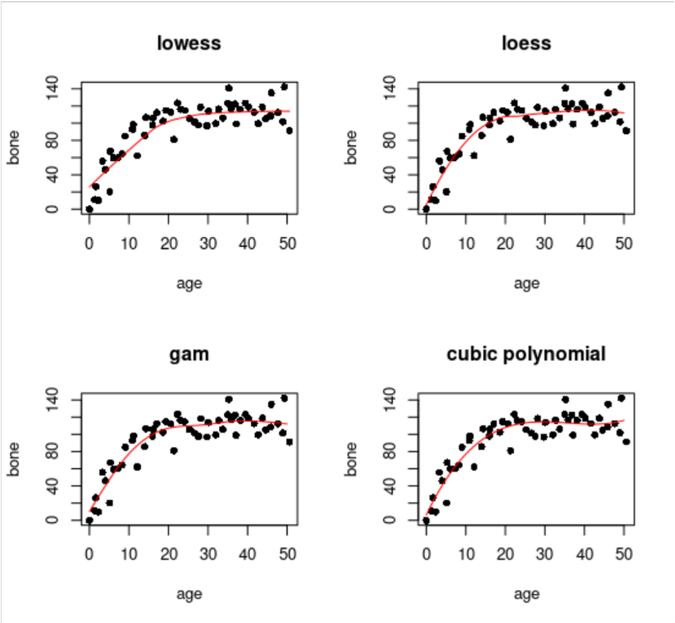
R: Como es una función incorporada y no requiere que se cargue ningún paquete externo, loess (arriba a la derecha) es una buena opción; tiene un ajuste razonable, y no es demasiado curvado. Primero se ajusta un modelo de regresión, y luego utiliza predict con un vector de valores especificado para la variable explicativa, y luego dibuja la curva utilizando líneas.
12.6 Regresiones No Paramétricas
Así como se puede utilizar la función lm para ajustar regresiones lineales Gaussianos, GLM para ajustar regresiones lineales no Gaussianos, se puede usar modelos GAM para ajustar regresiones no-lineales y no-paramétricas, que es son los modelos GAM?
- GAM:
- Generalized Additive Models → similar al concepto de GLM que vimos en regresiones, pero con relaciones no-lineales y no-paramétricas. Los GAM permiten suavizadores no-paramétricos además de las formas paramétricas. Utilizan las mismas familias de GLM (binomial, poisson, Gamma, etc).
Se puede predecir y con una variable continua x de forma paramétrica, como GLM, usando:
y \sim x
O usando suavizadores no-paramétricos (smoothers) usando s(x):
y \sim s(x)
O una combinación:
y \sim x1 + s(x_2)
O términos que interaccionan entre sí:
Y \sim s(x_1) + s(x_2) + s(x_1, x_2)
12.7 Non-parametric smoothers
Aquí nos ocupamos de la utilización de suavizadores no paramétricos en la modelación estadística, cuyo objetivo es evaluar los méritos relativos de una serie de modelos diferentes para explicar la variación de la variable de respuesta. Una de las funciones de ajuste de modelos más sencillas es loess
El siguiente ejemplo muestra el cambio de la población:
Delta =log\left(\frac{N(t + 1)}{N(t)}\right)
En función de la densidad de población (N(t)) en una investigación de la dependencia de la densidad en una población de ovejas.
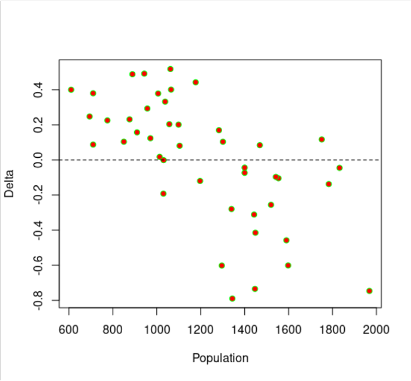
El cambio de la población es positivo a bajas densidades Delta > 0 y negativo a altas densidades Delta < 0, pero hay una gran dispersión, y no evidente qué forma de función describiría mejor los datos. Aquí está el loess por defecto:
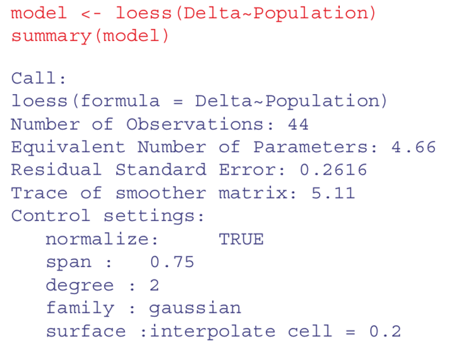
loess.
loess.Comparar múltiples datos al mismo tiempo con la función pairs. Usemos de ejemplo con mediciones de radiación, velocidad de viento, y concentraciones de ozono:
pairs(ozone.data,
panel=function(x,y) { points(x,y); lines(lowess(x,y))} )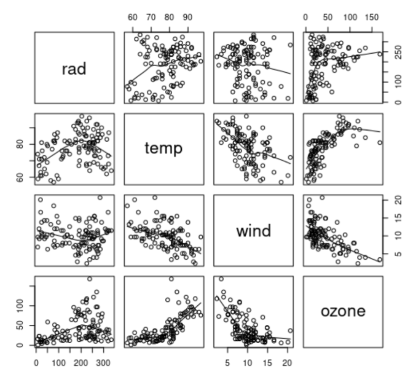
pairsAjustamos un modelo GAM para predecir la concentración de ozono usando predictores suavizados:
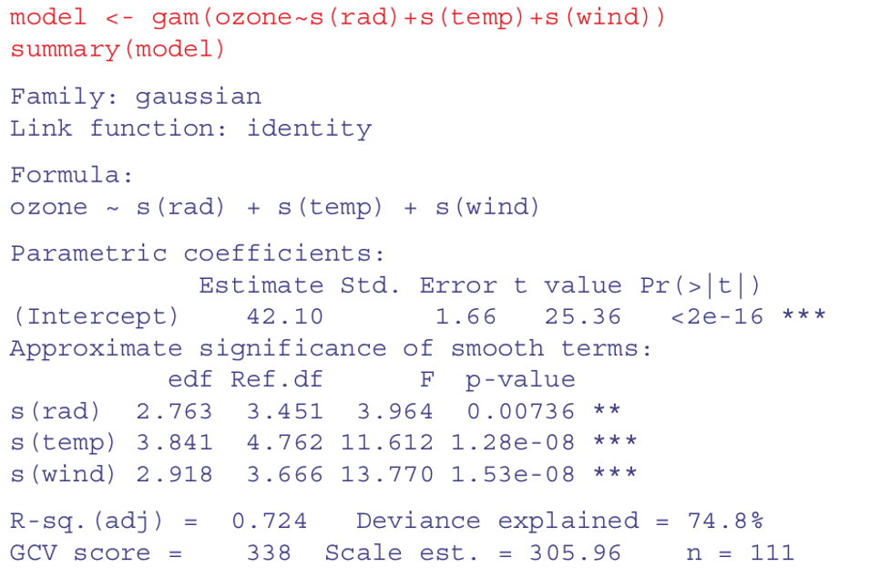
Nótese que el intercepto se estima como un coeficiente paramétrico (42,10; tabla superior) y las tres variables explicativas se ajustan como términos suavizados. Las tres son significantes, pero la radiación es la menos significante con p = 0,00736**.
Podemos comparar un GAM con y sin un término para la radiación utilizando el ANOVA de la forma normal:
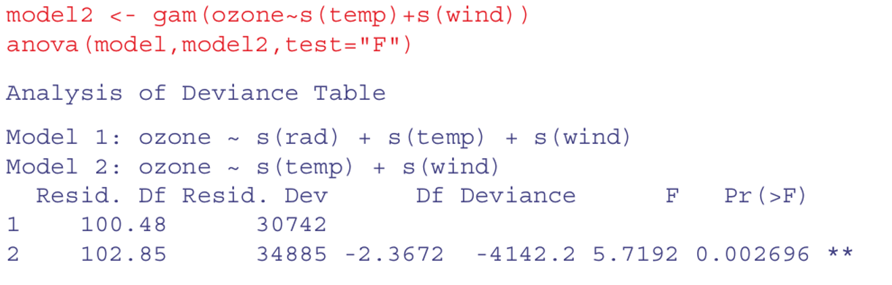
Radiación debe permanecer en el modelo! Aporta información significativa. Podemos ver ahora si variables como temperatura y viento interaccionan entre si usando s(wind, temp):
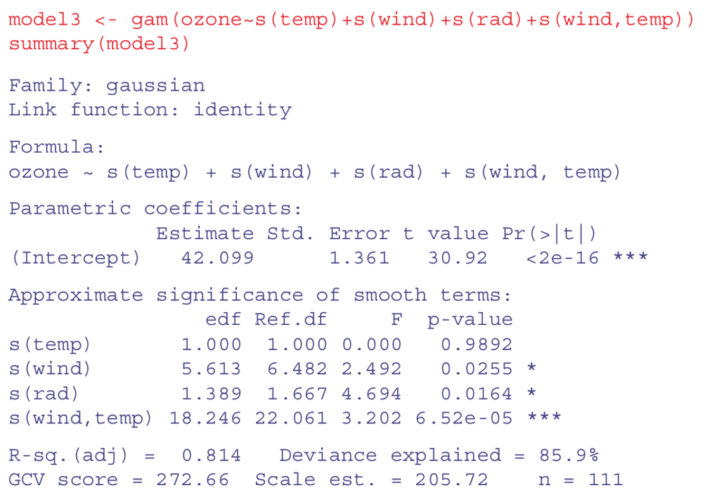
s(wind, temp)La interacción parece ser muy significativa, pero el efecto principal de la temperatura se anula. Podemos inspeccionar el ajuste del modelo3 así:
par(mfrow=c(2,2))
plot(model3, residuals=T, pch=1)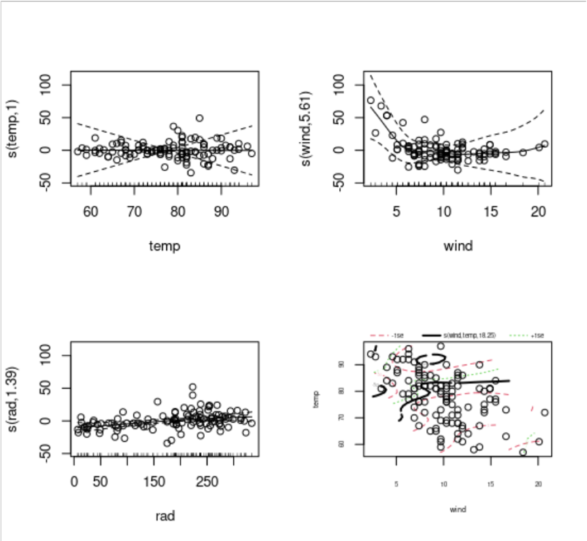
Las figuras muestran las relaciones de las variables lineales con su versión s(x).
Y la interacción al final, la cual muestra relaciones complejas.
Las líneas punteadas son las desviación estándar, +- 1sdt
12.8 Análisis de Covarianza no-paramétrico o con función de distribución específica
Así como se puede hacer un ANCOVA linear usando la función lm envés de aov, se puede hacer un ANCOVA no-paramétrico y no-lineal con GAM y lineal con GLM (GAM NO permite experimento factorial)
Veamos un ejemplo donde la variable respuesta es el número de especies (riqueza; números enteros positivos) en áreas con distinta biomasa (números continuos positivos) y con diferentes pH (3 clases). Como la variable y es riqueza, vamos a usar la familia de distribución de Poisson.
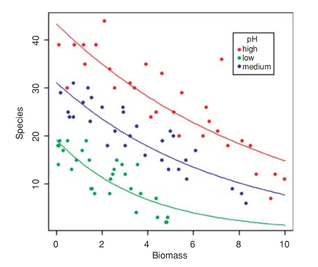
Está claro que las especies disminuyen con la biomasa, y que el pH del suelo tiene un gran efecto sobre las especies, pero ¿la pendiente de la relación entre las especies y la biomasa depende del pH?
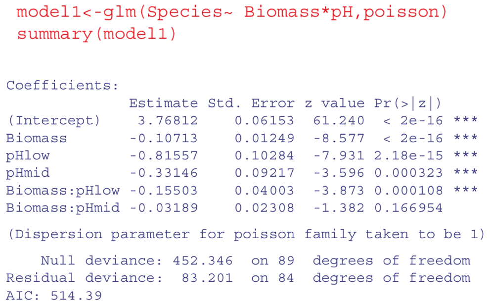 Ejecución en R de Modelo GLM. Las relaciones se ven lineales a priori, así que usamos GLM con la familia poisson.
Versión no paramétrica con GAM. Básicamente da =, ya que las relaciones no mostraban no-linealidades desde el principio. Quedarse entonces con el modelo más simple = lineal.
model3 <- gam(Species~ s(Biomass) + pH, poisson)
summary(model3)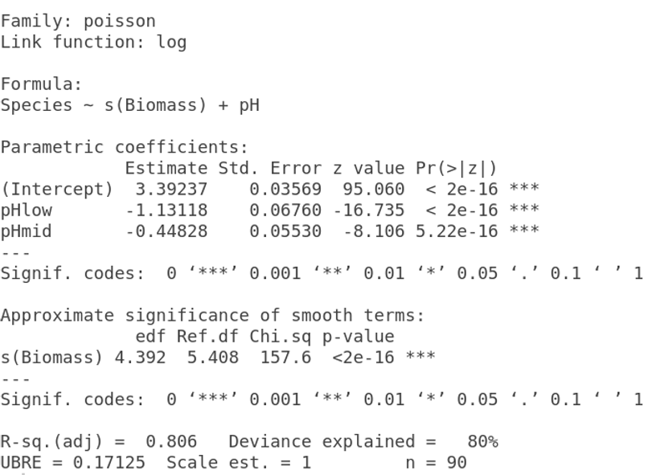 Versión no paramétrica con GAM
12.9 Transformación de datos
Envés de usar modelos no-lineales, se pueden transformar los datos para obtener mejor linealidad entre sus relaciones entre las variables respuesta y predictivas. Las transformaciones más utilizadas son:
log(y)frente axpara relaciones exponencialeslog(y)contralog(x)para funciones de potencia;exp(y)contraxpara relaciones logarítmicas;1/ycontra1/xpara las relaciones asintóticas;log(p/(1 - p))contraxpara datos de proporción.
Otras transformaciones son útiles para la estabilización de la varianza:
sqrt(y)para estabilizar la varianza para datos de recuento;arcsin(y)para estabilizar la varianza de los datos de porcentaje.
12.10 Parte Práctica
Importar data
data1 <- read.table(
'https://raw.githubusercontent.com/shifteight/R-lang/master/TRB/data/gardens.txt',
header = T,
stringsAsFactors = TRUE
)
head(data1) gardenA gardenB gardenC
1 3 5 3
2 4 5 3
3 4 6 2
4 3 7 1
5 2 4 10
6 3 4 4Comparacion de variables
# gardenA vs gardenB
boxplot(data1$gardenA, data1$gardenB, notch = TRUE, ylab = 'Ozono', xlab = "Garden")# distribucion de los datos
hist(data1$gardenC)12.10.1 T-Student (Paramétrico)
# Diferencias entre muestras de ozono usando el test parametrico t test
t.test(data1$gardenA, data1$gardenB) # cual es el valor de p?
Welch Two Sample t-test
data: data1$gardenA and data1$gardenB
t = -3.873, df = 18, p-value = 0.001115
alternative hypothesis: true difference in means is not equal to 0
95 percent confidence interval:
-3.0849115 -0.9150885
sample estimates:
mean of x mean of y
3 5 12.10.2 Wilcoxon rank-sum test (No Paramétrico)
wilcox.test(data1$gardenA, data1$gardenB)Warning in wilcox.test.default(data1$gardenA, data1$gardenB): cannot compute
exact p-value with ties
Wilcoxon rank sum test with continuity correction
data: data1$gardenA and data1$gardenB
W = 11, p-value = 0.002988
alternative hypothesis: true location shift is not equal to 0Esta es una alternativa no parametrica a la prueba t de Student, que podriamos usar si los errores no fueran normales. El test de Wilcoxon rank-sum, W La funcion utiliza un algoritmo de aproximacion normal para calcular un valor z y, a partir de este, un valor p para evaluar la hipotesis de que las dos medias son iguales. Este valor p de 0,002988 es mucho menor que 0,05, por lo que se rechazar la hipotesis nula y concluimos que las concentraciones medias de ozono en los jardines A y B son significativamente diferente. El mensaje de advertencia al final llama la atencion sobre el hecho de que hay correlacion en los datos (repeticiones de la misma medida de ozono), y esto significa que el valor p no se puede calcular exactamente (esto rara vez es preocupacion). Es interesante comparar los valores de p de la prueba t y la prueba de Wilcoxon con los mismos datos:
T-Student:
- p = 0.001115
Prueba Wilcox:
- p = 0.002988
La prueba no parametrica es mucho mas apropiada que la prueba t cuando los errores no son normales, y la prueba no parametrica es aproximadamente un 95% tan poderosa con errores normales, y puede ser mas mas potente que la prueba t si la distribucion esta fuertemente sesgada por la presencia de valores atipicos. Tipicamente, como aqui, La prueba t dara el valor p mas bajo, por lo que se dice que la prueba de Wilcoxon es conservadora: si una diferencia es significativa bajo una prueba de Wilcoxon seria aun mas significativo bajo una prueba t.
12.10.3 Tests on paired samples
A veces, los datos de dos muestras provienen de observaciones emparejadas. En este caso, podriamos esperar una correlacion entre las dos mediciones, porque se realizaron en el mismo individuo o se tomaron de la misma ubicacion.
Importar data
Los siguientes datos son una puntuacion de biodiversidad compuesta basada en una muestra de invertebrados acuaticos. Los elementos estan emparejados porque las dos muestras fueron tomadas en el mismo rio, una aguas arriba y otra aguas abajo del mismo canal de aguas residuales
streams <- read.table('https://raw.githubusercontent.com/shifteight/R-lang/master/TRB/data/streams.txt',
header = T, stringsAsFactors = TRUE)
head(streams) down up
1 20 23
2 15 16
3 10 10
4 5 4
5 20 22
6 15 15Comparacion de variables
boxplot(streams$down, streams$up, notch = TRUE) # es correcto?Asumiendo independencia
t.test(streams$down, streams$up) # p = 0.6856
Welch Two Sample t-test
data: streams$down and streams$up
t = -0.40876, df = 29.755, p-value = 0.6856
alternative hypothesis: true difference in means is not equal to 0
95 percent confidence interval:
-5.248256 3.498256
sample estimates:
mean of x mean of y
12.500 13.375 wilcox.test(streams$down, streams$up) # p = 0.5559Warning in wilcox.test.default(streams$down, streams$up): cannot compute exact
p-value with ties
Wilcoxon rank sum test with continuity correction
data: streams$down and streams$up
W = 112, p-value = 0.5559
alternative hypothesis: true location shift is not equal to 0Asumiendo que son datos pareados
t.test(streams$down, streams$up, paired = TRUE) # p = 0.0081
Paired t-test
data: streams$down and streams$up
t = -3.0502, df = 15, p-value = 0.0081
alternative hypothesis: true difference in means is not equal to 0
95 percent confidence interval:
-1.4864388 -0.2635612
sample estimates:
mean of the differences
-0.875 wilcox.test(streams$down, streams$up, paired = TRUE) # p = 0.01406Warning in wilcox.test.default(streams$down, streams$up, paired = TRUE): cannot
compute exact p-value with tiesWarning in wilcox.test.default(streams$down, streams$up, paired = TRUE): cannot
compute exact p-value with zeroes
Wilcoxon signed rank test with continuity correction
data: streams$down and streams$up
V = 8, p-value = 0.01406
alternative hypothesis: true location shift is not equal to 0Kruskal-Wallis test
Resultados de un experimento para comparar rendimientos (medidos por el peso seco de las plantas) obtenido bajo un control y dos condiciones de tratamiento diferentes.
Importar data
# dataset = PlantGrowth.csv
my_data <- read.csv("data/PlantGrowth.csv", stringsAsFactors = TRUE)
head(my_data) weight group
1 4.17 ctrl
2 5.58 ctrl
3 5.18 ctrl
4 6.11 ctrl
5 4.50 ctrl
6 4.61 ctrl# str(my_data)
# group levels
levels(my_data$group)[1] "ctrl" "trt1" "trt2"Visualizacion
# no es necesario usar esta libreria, es solo un ejemplo mas bonito
library(ggpubr)
library(rstatix)
ggboxplot(my_data, x = "group", y = "weight",
color = "group", palette = c("#00AFBB", "#E7B800", "#FC4E07"),
order = c("ctrl", "trt1", "trt2"),
ylab = "Weight", xlab = "Treatment")ggline(my_data, x = "group", y = "weight",
color = "group", palette = c("#00AFBB", "#E7B800", "#FC4E07"),
add = c("mean_se", "jitter"), add.params = list(size = 2, alpha = 0.2),
order = c("ctrl", "trt1", "trt2"),
ylab = "Weight", xlab = "Treatment")Comparacion de los tratamientos
summary(aov(weight ~ group, data = my_data)) # p = 0.0159 Df Sum Sq Mean Sq F value Pr(>F)
group 2 3.766 1.8832 4.846 0.0159 *
Residuals 27 10.492 0.3886
---
Signif. codes: 0 '***' 0.001 '**' 0.01 '*' 0.05 '.' 0.1 ' ' 1kruskal.test(weight ~ group, data = my_data) # p = 0.01842
Kruskal-Wallis rank sum test
data: weight by group
Kruskal-Wallis chi-squared = 7.9882, df = 2, p-value = 0.01842Como el valor p es menor que el nivel de significancia 0.05, podemos concluir que existen diferencias significativas entre los grupos de tratamiento.
Multiple pairwise-comparison between groups
A partir del resultado de la prueba de Kruskal-Wallis, sabemos que existe una diferencia entre grupos, pero no sabemos que pares de grupos son diferentes. Es posible usar la funcion pairwise.wilcox.test() para calcular por pares comparaciones entre niveles de grupo con correcciones para pruebas multiples.
# ?pairwise.wilcox.test
pairwise.wilcox.test(PlantGrowth$weight, PlantGrowth$group,
p.adjust.method = "bonf")Warning in wilcox.test.default(xi, xj, paired = paired, ...): cannot compute
exact p-value with ties
Pairwise comparisons using Wilcoxon rank sum test with continuity correction
data: PlantGrowth$weight and PlantGrowth$group
ctrl trt1
trt1 0.596 -
trt2 0.189 0.027
P value adjustment method: bonferroni La comparacion por pares muestra que solo trt1 y trt2 son significativamente diferentes (p < 0.05).
12.10.4 Friedman test
Importar data
Usaremos el conjunto de datos de puntaje de autoestima medido en tres puntos de tiempo.Los datos estan disponibles en el paquete datarium.
# dataset = selfesteem.csv
selfesteem <- read.csv("data/selfesteem.csv", stringsAsFactors = TRUE)
head(selfesteem) id time score
1 1 t1 4.005027
2 2 t1 2.558124
3 3 t1 3.244241
4 4 t1 3.419538
5 5 t1 2.871243
6 6 t1 2.045868# str(selfesteem)
# trasnfromar id a factor
selfesteem$id = as.factor(selfesteem$id)# vamos a probar los test que vienen dentro de R basico y
# de un paquete que se llama rstatix
ggboxplot(selfesteem, x = "time", y = "score", add = "jitter")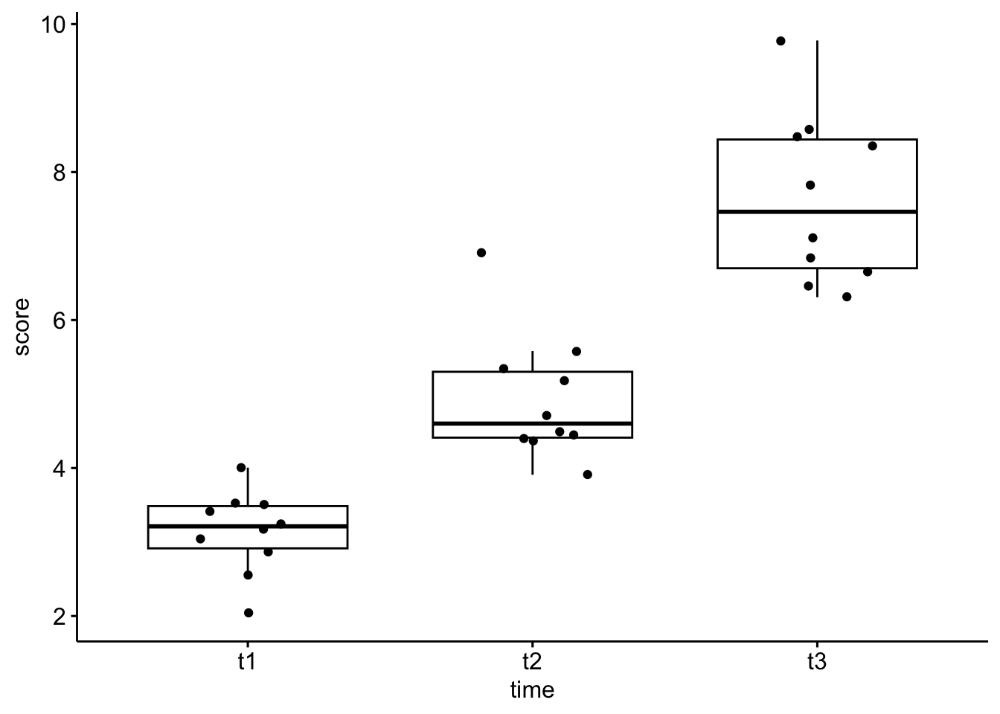
## Comparacion de Friedman test, de dos paquetes distintos --------------
### Basico ------------------------------------------------------------------
friedman.test(score ~ time | id, data=selfesteem) # p = 0.0001117
Friedman rank sum test
data: score and time and id
Friedman chi-squared = 18.2, df = 2, p-value = 0.0001117### rstatix -----------------------------------------------------------------
res.fried <- friedman_test(score ~ time | id, data=selfesteem)
res.fried # p = 0.000112# A tibble: 1 × 6
.y. n statistic df p method
* <chr> <int> <dbl> <dbl> <dbl> <chr>
1 score 10 18.2 2 0.000112 Friedman testComparacion de Wilcoxon test, de dos paquetes distintos
Basico
pairwise.wilcox.test(selfesteem$score, selfesteem$time, paired = TRUE,
p.adjust.method = "bonf")
Pairwise comparisons using Wilcoxon signed rank exact test
data: selfesteem$score and selfesteem$time
t1 t2
t2 0.0059 -
t3 0.0059 0.0117
P value adjustment method: bonferroni rstatix
pwc <- wilcox_test(score ~ time, paired = TRUE, p.adjust.method = "bonferroni"
, data=selfesteem)
pwc# A tibble: 3 × 9
.y. group1 group2 n1 n2 statistic p p.adj p.adj.signif
* <chr> <chr> <chr> <int> <int> <dbl> <dbl> <dbl> <chr>
1 score t1 t2 10 10 0 0.002 0.006 **
2 score t1 t3 10 10 0 0.002 0.006 **
3 score t2 t3 10 10 1 0.004 0.012 * # agregar coordenadas y posiciones de los valores. Solo necesario para hacer graficos
pwc = add_xy_position(pwc, x = "time")
pwc# A tibble: 3 × 13
.y. group1 group2 n1 n2 statistic p p.adj p.adj.s…¹ y.pos…² groups
<chr> <chr> <chr> <int> <int> <dbl> <dbl> <dbl> <chr> <dbl> <name>
1 score t1 t2 10 10 0 0.002 0.006 ** 10.5 <chr>
2 score t1 t3 10 10 0 0.002 0.006 ** 11.5 <chr>
3 score t2 t3 10 10 1 0.004 0.012 * 12.5 <chr>
# … with 2 more variables: xmin <dbl>, xmax <dbl>, and abbreviated variable
# names ¹p.adj.signif, ²y.positionggboxplot(selfesteem, x = "time", y = "score", add = "point") +
stat_pvalue_manual(pwc, hide.ns = TRUE) +
labs(
subtitle = get_test_label(res.fried, detailed = TRUE),
caption = get_pwc_label(pwc)
)
## Plot --------------------------------------------------------------------
# Funcion para exportar el plot como svg. Despues de usarla, se debe
# correr el plot y para finalizar la exportacion, debemos aplicar el
# dev.off()
svg('plot.svg', width = 8, height = 8)
plot_box <- ggboxplot(selfesteem, x = "time", y = "score", add = "point") +
stat_pvalue_manual(pwc, hide.ns = TRUE) +
labs(
subtitle = get_test_label(res.fried, detailed = TRUE),
caption = get_pwc_label(pwc)
)
dev.off()
# para visualizarlo
plot_box